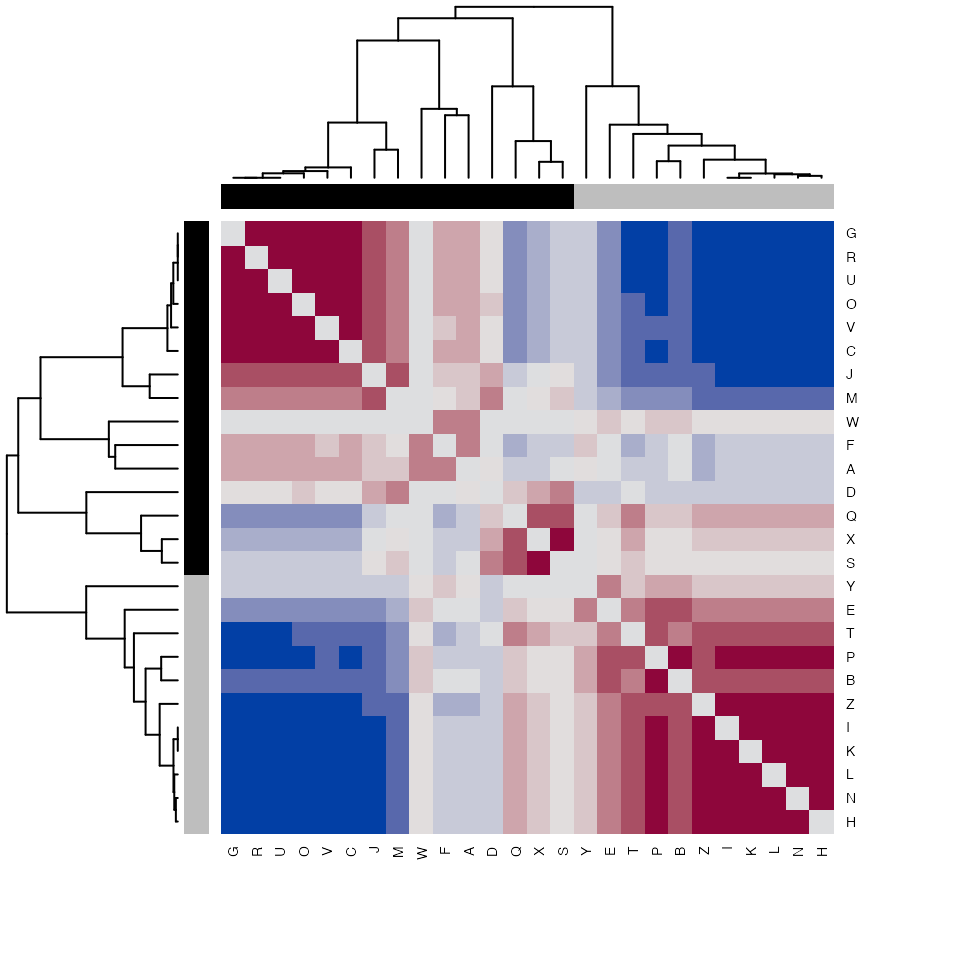
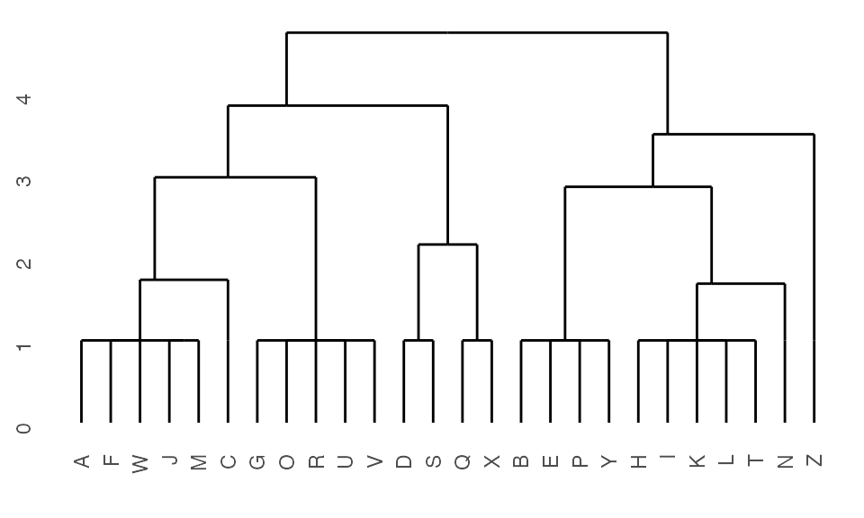
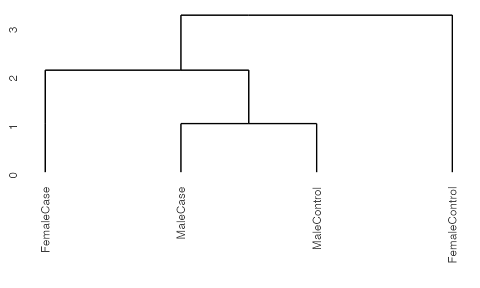
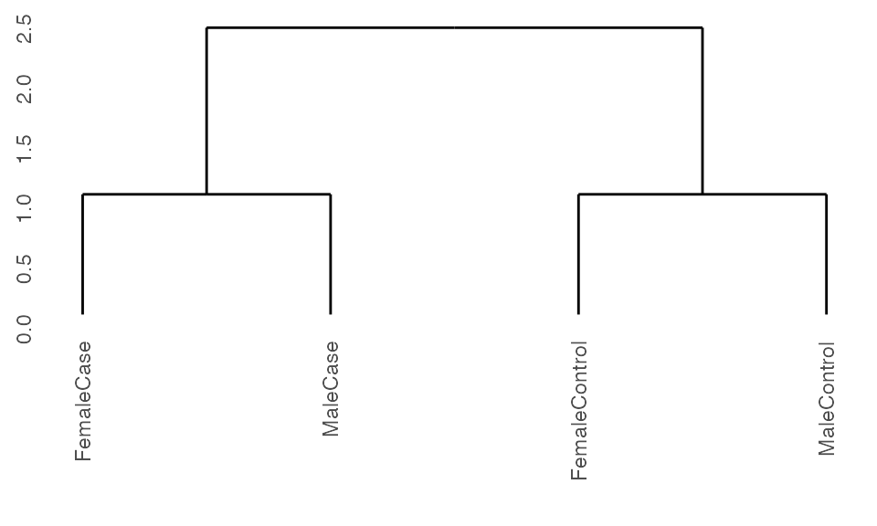

vignettes/RunningK2Taxonomer.Rmd
RunningK2Taxonomer.RmdThis vignette describes the general workflow for running K2Taxonomer on gene expression data (Reed and Monti 2020). While this vignette describes an analysis of bulk gene expression data, many of these steps are shared with that of single-cell expression analyses. A vignette for running K2Taxonomer on single-cell expression data can be found here.
ExpressionSet objectThe main input of K2Taxonomer is an ExpressionSet object with approximately normally distributed expression values. Here we read in an example data set. See ?sample.ExpressionSet for more information about these data.
data(sample.ExpressionSet)K2 objectThe K2preproc() initializes the K2 object and runs pre-processing steps. Here, you can specify all arguments used throughout the analysis. Otherwise, you can specify these arguments within the specific functions for which they are implements. See help pages for more information.
Here we will start by using the defaults.
## Run pre-processing
K2res <- K2preproc(sample.ExpressionSet)Note: This data set is microarray expression data. If using normalized and log-transformed count data then it’s generally recommended that you set logCounts = TRUE . This will more appropriately perform differential gene expression analyses with the limma R package (Ritchie et al. 2015).
## NOT RUN
K2res <- K2preproc(sample.ExpressionSet,
logCounts = TRUE)K2 object structreK2Taxonomer functions create and manipulate S4, K2 objects, defined within the package. K2 objects have 5 slots.
K2eSet().K2data().K2results.K2info().K2results()
K2genesets.K2gene2Pathway.K2geneURL().K2genesetURL().K2preproc() will fill in three of these slots:, eSet, meta, and dataMatrix.
## Extract ExpressionSet
K2eSet(K2res)
#> ExpressionSet (storageMode: lockedEnvironment)
#> assayData: 500 features, 26 samples
#> element names: exprs, se.exprs
#> protocolData: none
#> phenoData
#> sampleNames: A B ... Z (26 total)
#> varLabels: sex type score
#> varMetadata: labelDescription
#> featureData: none
#> experimentData: use 'experimentData(object)'
#> Annotation: hgu95av2
## Extract dataMatrix
dim(K2data(K2res))
#> [1] 500 26meta will be populated by default a set of parameters entered into K2preproc(). Note that for each step, new parameters may be entered, specific to that function.
## Extract meta data
names(K2meta(K2res))
#> [1] "cohorts" "vehicle" "covariates" "block"
#> [5] "logCounts" "infoClass" "use" "nFeats"
#> [9] "featMetric" "recalcDataMatrix" "nBoots" "clustFunc"
#> [13] "clustCors" "clustList" "linkage" "qthresh"
#> [17] "cthresh" "ntotal" "ssGSEAalg" "ssGSEAcores"
#> [21] "oneoff" "stabThresh"The K2Taxonomer is run by K2tax(). At each recursion of the algorithm, the observations in dataMatrix are partitioned into two sub-groups based on a compilation of repeated K=2 clustering on bootstrapped sampling of features. For each partition in the recursion, a stability metric is used to estimate robustness, which takes on values between 0 and 1, where values close to 1 represent the instance in which the same clustering occured in every or nearly every perturbation of a large set of observations. As the number of observations decreasing down the taxonomy the largest possible stability estimate decreases, such that the largest possible stability estimate of triplets and duplets, is 0.67 and 0.50, respectively.
The parameter, stabThresh, controls the minimum value of the stability metric to continue partitioning the observations. By default, stabThresh is set to 0, which will run the algorithm until until all observations fall into singlets. If we set stabThresh = 0.5 the algorithm can not separate duplets, as well as larger sets that demonstrate poor stability when a partition is attempted. This can also be set during initialization with K2preproc().
Choosing an appropriate threshold is dependent on the size of the original data set. For large data sets, choosing small values will greatly increase runtime, and values between 0.8 and 0.7, are generally recommended.
## Run K2Taxonomer aglorithm
K2res <- K2tax(K2res,
stabThresh = 0.5)The results slot of the K2 object is a named list of the results of running the K2Taxonomer algorithm. Each item in the list contains the IDs of the two sets of observations denoted by the partitions, as well as additional annotation for that partition, including the stability estimates.
Each item is assigned a letter ID. If there are more than 26 items, than an additional letter is tacked on, such that the 27th item is named, AA, and the 28th item is named BB.
## Get observations defined in each partition
K2results(K2res)$A$obs
#> [[1]]
#> [1] "A" "C" "D" "F" "G" "J" "M" "O" "Q" "R" "S" "U" "V" "W" "X"
#>
#> [[2]]
#> [1] "B" "E" "H" "I" "K" "L" "N" "P" "T" "Y" "Z"Stability metrics measure the extant to which pairs of observations in the data setpartitioned together for a given partition of the data.
## Get bootstrap probability of this partition
K2results(K2res)$A$bootP
#> [1] 0.038
## Node stability (Value between 0 and 1. 1 indicating high stability)
K2results(K2res)$A$stability$node
#> [1] 0.6965192
## Stability of each subseqent subgroup.
K2results(K2res)$A$stability$clusters
#> [1] 0.6453327 0.7098154
## Distance matrix indicating pairwise cosine similarity of each observation
partitionAstability <- as.matrix(K2results(K2res)$A$stability$samples)
## Show heatmap
hcols <- c("grey", "black")[colnames(partitionAstability) %in% K2results(K2res)$A$obs[[1]] + 1]
heatmap(partitionAstability,
distfun = function(x) as.dist(1-x),
hclustfun = function(x) hclust(x, method = "mcquitty"),
col = hcl.colors(12, "Blue-Red"),
scale = "none",
cexRow = 0.7,
cexCol = 0.7,
symm = TRUE,
ColSideColors = hcols,
RowSideColors = hcols,
keep.dendro = FALSE)
After running the K2Taxonomer algorithm, a dendrogram object can be built using K2dendro().
## Get dendrogram from K2Taxonomer
dendro <- K2dendro(K2res)
## Get dendrogram data
ggdendrogram(dendro)
A principal motivation behind K2Taxonomer is that insight can be garnered and tracjed for various levels in a hierarchical sub-grouping of obervations, such that analytical characterization of different sub-groups throughout the taxonomy serve to both validate and inform about specific sub-groups.
To this end, K2Taxonomer runs additional analyses to annotate each partition. These analyses include: differential expression analysis using the limma package and gene set enrichment testing for both hyperenrichment and differntial analysis of singe-sample enrichment scores estimated using the GSVA package (Ritchie et al. 2015)(Hanzelmann, Castelo, and Guinney 2013).
Differential analysis in K2Taxonomer is performed using limma. Differential analysis is performed for each partition of the data, comparing the gene expression between each pair of subgroups across all partitions.
## Run DGE
K2res <- runDGEmods(K2res)
## Get differential results for one partition
head(K2results(K2res)$A$dge)
#> gene coef mean t pval
#> 1 31492_at 282.13664 307.98895 6.955755 2.796513e-07
#> 2 31461_at 27.57876 41.53356 5.633815 7.423551e-06
#> 3 AFFX-HUMGAPDH/M33197_5_at 1709.65597 2262.19365 5.398349 1.354315e-05
#> 4 31321_at 36.15622 141.04954 5.358643 1.499377e-05
#> 5 31385_at 1202.02188 3490.16038 5.169070 2.440299e-05
#> 6 31675_s_at 33.12332 30.28507 5.020459 3.579310e-05
#> fdr B edge
#> 1 0.0005552722 -2.520401 2
#> 2 0.0046351547 -2.879747 1
#> 3 0.0055403813 -2.954549 2
#> 4 0.0055490358 -2.967498 1
#> 5 0.0068633420 -3.030659 2
#> 6 0.0080534469 -3.081715 2
## Concatenate all results and generate table
DGEtable <- getDGETable(K2res)
head(DGEtable)
#> gene coef mean t pval fdr
#> 1 31737_at 1445.12854 264.75622 119.688475 9.341821e-10 4.203820e-06
#> 2 31492_at 282.13664 307.98895 6.955755 2.796513e-07 5.552722e-04
#> 3 31397_at 93.10100 39.35873 11.829624 3.701815e-07 5.552722e-04
#> 4 31589_at 195.18564 97.21551 10.249751 1.385089e-06 1.558225e-03
#> 5 31596_f_at 900.65933 1468.05440 10.679512 2.232714e-06 2.009443e-03
#> 6 31461_at 27.57876 41.53356 5.633815 7.423551e-06 4.635155e-03
#> B edge node direction
#> 1 -4.445513 2 H up
#> 2 -2.520401 2 A up
#> 3 -4.318449 2 C up
#> 4 -4.325216 2 C up
#> 5 -3.953010 1 F up
#> 6 -2.879747 1 A upSee ?getDGETable for a description of the columns in this data frame.
In this example, we are running K2Taxonomer without information specifying a set of observations to treat as a control group, for which to make comparisons in regards to the directionality of differential expression. In the absence of this designation, K2Taxonomer assigns genes to the partition-specific subgroup with the larger mean. Accordingly, the of coeficient (the “coef” in the output of getDGETable()) is always positive, indicating the difference of mean of the gene expression of the assigned subgroup from the other subgroup. Moreover, the “direction” of this gene will always be assigned to up.
Following the full description of this analysis, we describe methods for running K2Taxonomer, specifying a cohort variable in the data set. When including this variable, the user may assign one of the levels of this variable as the control group. With the inclusion of this designation, K2Taxonomer will assign directionality to the differences in gene expression.
K2Taxonomer performed both hyperenrichment and differential single-sample enrichment tests based on an input of gene sets using the genesets argument, which can be specified in runGSEmods(), as demonstrated here, or during initialization with K2preproc(). Here, the gene sets are made up.
Gene set hyperenrichment is performed on the top genes for each subgroup, as defined by differential analysis with the runGSEmods(). The arguments qthresh and cthresh specify thresholds for defining top genes, based on FDR Q-value and log fold-change, respectively. Here, qthresh = 0.1, such that genes with FDR Q-value < 0.1 will be assigned as the top genes for a given partition.
## Create dummy set of gene sets
genes <- unique(DGEtable$gene)
genesetsMadeUp <- list(
GS1 = genes[1:50],
GS2 = genes[51:100],
GS3 = genes[101:150])
## Run gene set hyperenrichment
K2res <- runGSEmods(K2res,
genesets = genesetsMadeUp,
qthresh = 0.1)Single-sample enrichment is performed in two steps. First, the GSVA package is used to generate observation-level enrichment scores, followed by differential analysis using the limma package. This is performed by the functions runGSVAmods() and runDSSEmods(), respectively. Here, we can specify which enrichment algorithm to use when running the GSVA functionality and the number of CPU cores to use with the ssGSEAalg and ssGSEAcores arguments, respectively. These can also be set in the K2preproc() function. Note, that the arguments shown are the defaults.
## Create expression matrix with ssGSEA(GSVA) estimates
K2res <- runGSVAmods(K2res,
ssGSEAalg = "gsva",
ssGSEAcores = 1,
verbose = FALSE)
## Extract ernichment score Expression Set object
K2gSet(K2res)
#> ExpressionSet (storageMode: lockedEnvironment)
#> assayData: 3 features, 26 samples
#> element names: exprs
#> protocolData: none
#> phenoData
#> sampleNames: A B ... Z (26 total)
#> varLabels: sex type score
#> varMetadata: labelDescription
#> featureData: none
#> experimentData: use 'experimentData(object)'
#> Annotation:
## Run differential analysis on enrichment score Expression Set
K2res <- runDSSEmods(K2res)
## Extract table of all hyper and sample-level enrichment tests
K2enrRes <- getEnrichmentTable(K2res)
head(K2enrRes)
#> category node edge direction pval_hyper fdr_hyper nhits ndrawn ncats
#> 1 GS2 A 1 up 2.021949e-48 8.492186e-47 23 53 50
#> 2 GS3 A 1 up 2.722334e-35 5.716901e-34 18 53 50
#> 3 GS1 A 2 up 9.667671e-32 1.353474e-30 14 24 50
#> 4 GS1 C 2 up 9.880805e-28 1.037485e-26 13 28 50
#> 5 GS2 C 2 up 4.213120e-25 3.539021e-24 12 28 50
#> 6 GS1 A 1 up 3.535806e-21 2.475064e-20 12 53 50
#> ntot pval_limma fdr_limma coef mean t B
#> 1 20000 5.190324e-03 0.0467129155 0.1961946 0.019494250 3.027112 -2.722372
#> 2 20000 1.525711e-06 0.0000411942 0.2740537 0.012453243 6.039235 5.145331
#> 3 20000 1.309560e-02 0.0707162620 0.2371838 -0.001126375 2.646378 -3.579505
#> 4 20000 9.206661e-02 0.3107248098 0.3140874 0.135710451 1.774073 -4.196811
#> 5 20000 5.820382e-02 0.2245004391 0.3025468 -0.093694921 2.015546 -3.882835
#> 6 20000 NA NA NA NA NA NA
#> hits
#> 1 31428_at,31694_at,AFFX-TrpnX-M_at,31721_at,31413_at,31644_at,31579_at,31648_at,31626_i_at,31440_at,31408_at,31715_at,AFFX-DapX-M_at,31353_f_at,AFFX-ThrX-3_at,AFFX-BioB-5_at,31328_at,31607_at,AFFX-LysX-M_at,31441_at,31373_at,AFFX-ThrX-5_at,AFFX-YEL024w/RIP1_at
#> 2 31436_s_at,31437_r_at,31459_i_at,31335_at,31345_at,31580_at,31713_s_at,31424_at,31733_at,31465_g_at,31567_at,31683_at,31416_at,31653_at,31312_at,31560_at,AFFX-BioC-5_at,31614_at
#> 3 31492_at,AFFX-HUMGAPDH/M33197_5_at,31583_at,31385_at,31546_at,31675_s_at,31330_at,31527_at,31665_s_at,31463_s_at,31672_g_at,AFFX-HUMGAPDH/M33197_M_at,31431_at,31573_at
#> 4 31397_at,31589_at,AFFX-YEL021w/URA3_at,AFFX-BioC-3_st,31564_at,31425_g_at,AFFX-MurIL2_at,31502_at,31507_at,31726_at,31556_at,31574_i_at,31466_at
#> 5 31571_at,31554_at,AFFX-PheX-M_at,31379_at,AFFX-HUMGAPDH/M33197_3_at,31417_at,31404_at,31586_f_at,31478_at,31364_i_at,AFFX-CreX-5_at,31406_at
#> 6 31461_at,AFFX-YEL021w/URA3_at,31321_at,AFFX-MurIL2_at,31618_at,AFFX-TrpnX-5_at,31457_at,31471_at,31530_at,AFFX-MurIL4_at,31535_i_at,31635_g_atSee ?getEnrichmentTable for a description of the columns in this data frame.
In addition to annotating subgroups based on gene and pathway activity, K2Taxonomer includes functionality to perform statistical testing of these subgroups based on known “phenotypic” information. For example this data set includes three phenotypic variables, including two binary variables, “sex” and “type”, and a continuos variable, “score”.
print(str(pData(sample.ExpressionSet)))
#> 'data.frame': 26 obs. of 3 variables:
#> $ sex : Factor w/ 2 levels "Female","Male": 1 2 2 2 1 2 2 2 1 2 ...
#> $ type : Factor w/ 2 levels "Case","Control": 2 1 2 1 1 2 1 1 1 2 ...
#> $ score: num 0.75 0.4 0.73 0.42 0.93 0.22 0.96 0.79 0.37 0.63 ...
#> NULLNote: Unlike differential gene or pathway analysis, the phenotypic variable tests are run one-versus-all, comparing the members of an individual subgroup to all other observations.
For categorical variables, over-representation of a specific label in a given subgroup is evaluated using Fisher’s Exact Test. For binary variables, like in this case, this may be run as a one-sided test, in such case the over-representation of only the second factor level in a given subgroup is evaluated. For example, as it is currently coded, a one-sided test of the “type” variable would only assess whether a subgroup had significantly greater observations labeled as “Case”. Alternatively, the test can be run as two-sided, if subgroups of over-representation of “Control” observations is also of interest.
Note: For categorical variables with more than two levels, only two-sided tests are possible.
For continuous, statistical differences can be evalutated user either the parametric Students’ T-test or the non-parametric Wilcoxon rank-sum test. As with categorical variables, these tests can be either one-sided (higher mean (T-test) or rank (Wilcox) in subgroup, or two-sided (higher or lower mean in node).
We specify the type of test to run as a named vector using the infoClass argument, in which the values of this vector indicates the type of test to run and the names indicate the variable for which to run the test. Value options are …
An example of this vector is shown below, specifying the following tests:
infoClassVector <- c(
sex = "factor",
type = "factor1",
score = "numeric1")After creating the named vector, phenotypic variable testing is performed using the runTestsMods() function.
## Run phenotype variable tests
K2res <- runTestsMods(K2res, infoClass = infoClassVector)
## Get differential results for one partition
head(K2results(K2res)$A$modTests)
#> [[1]]
#> value pval fdr stat df obsMean altMean diffMean nhits
#> 1 type 0.0400811 0.6412976 6.234942 NA NA NA NA 9
#> 2 sex 0.1088690 0.7465300 4.498287 NA NA NA NA NA
#> 3 score 0.7741782 1.0000000 68.500000 NA 0.5093333 0.5745455 -0.06521212 NA
#> ncase nalt ndrawn hits test
#> 1 11 15 15 A, C, F, J, R, U, V, W, X one-sided Fishers Exact Test
#> 2 NA NA NA <NA> two-sided Fishers Exact Test
#> 3 NA NA NA <NA> 1-sided Wilcox Test
#>
#> [[2]]
#> value pval fdr stat df obsMean altMean diffMean nhits
#> 1 sex 0.1088690 0.7465300 0.2223068 NA NA NA NA NA
#> 2 score 0.2417236 0.9093966 96.5000000 NA 0.5745455 0.5093333 0.06521212 NA
#> 3 type 0.9955479 1.0000000 0.1603864 NA NA NA NA 2
#> ncase nalt ndrawn hits test
#> 1 NA NA NA <NA> two-sided Fishers Exact Test
#> 2 NA NA NA <NA> 1-sided Wilcox Test
#> 3 11 15 11 L, P one-sided Fishers Exact Test
## Concatenate all results and generate table
modTestsTable <- getTestsModTable(K2res)
head(modTestsTable)
#> value node edge pval fdr stat df obsMean altMean diffMean
#> 7 type B 1 0.01048593 0.5033248 9.504328 NA NA NA NA
#> 19 type D 1 0.03210702 0.6412976 10.514017 NA NA NA NA
#> 1 type A 1 0.04008110 0.6412976 6.234942 NA NA NA NA
#> 49 type I 1 0.06346154 0.7465300 Inf NA NA NA NA
#> 37 type G 1 0.08227425 0.7465300 7.354815 NA NA NA NA
#> 2 sex A 1 0.10886896 0.7465300 4.498287 NA NA NA NA
#> nhits ncase nalt ndrawn hits
#> 7 8 11 15 11 A, C, F, J, R, U, V, W
#> 19 5 11 15 6 A, C, F, J, W
#> 1 9 11 15 15 A, C, F, J, R, U, V, W, X
#> 49 3 11 15 3 A, F, W
#> 37 4 11 15 5 A, F, J, W
#> 2 NA NA NA NA <NA>
#> test
#> 7 one-sided Fishers Exact Test
#> 19 one-sided Fishers Exact Test
#> 1 one-sided Fishers Exact Test
#> 49 one-sided Fishers Exact Test
#> 37 one-sided Fishers Exact Test
#> 2 two-sided Fishers Exact TestSee ?getTestsModTable for a description of the columns in this data frame.
K2Taxonomer can automatically generate an interactive dashboard for which to parse through the differential analysis results. This creates it’s own sub-directory with a compilable .Rmd file.
For more information see the K2Taxonomer Dashboards vignette.
## NOT RUN
K2dashboard(K2res)runK2Taxonomer wrapperAlternatively, K2Taxonomer can be run in one step with the runK2Taxonomer() function. This function takes all of the same arguments as the K2preproc() function, and runs all of the steps above.
K2res <- runK2Taxonomer(
eSet = sample.ExpressionSet,
genesets = genesetsMadeUp,
infoClass = infoClassVector,
stabThresh = 0.5)If there is replicates in the data or if the user is only interested in capturing subgroup relationships between known groups without partitioning the observations themselves, one can specify the cohorts variable of interest in the ExpressionSet object.
## Create set of cohorts from data
sample.ExpressionSet$group <- paste0(sample.ExpressionSet$sex, sample.ExpressionSet$type)
## Run pre-processing
K2res <- K2preproc(sample.ExpressionSet,
cohorts = "group")
#> Collapsing group-level values with LIMMA.
## Cluster the data
K2res <- K2tax(K2res)
## Create dendrogram
dendro <- K2dendro(K2res)
ggdendrogram(dendro)
When running with cohorts, K2Taxonomer includes the option of treating one of the levels within the cohorts variable as a control by specifying this value in the vehicle argument. In doing so, the values of each of the other cohorts will be evaluated in relation to this value.
## Run pre-processing
K2res <- K2preproc(sample.ExpressionSet,
cohorts = "group",
vehicle = "FemaleControl")
#> Collapsing group-level values with LIMMA.
## Cluster the data
K2res <- K2tax(K2res)
## Create dendrogram
dendro <- K2dendro(K2res)
ggdendrogram(dendro)
By specifying a control value, K2Taxonomer is able to assess directionality to differential analyses in relation to the control group, assigning direction of test statistics and gene assignments based on the subgroup in which the difference of the mean is more significantly different from the control group.
## Run DGE
K2res <- runDGEmods(K2res)
## Get differential results for one partition
head(K2results(K2res)$A$dge)
#> gene coef mean t pval fdr B
#> 1 31328_at 48.56717 129.8394 4.676610 9.560191e-05 0.09560191 -3.663824
#> 2 31535_i_at 86.65559 266.8695 3.793490 8.923576e-04 0.44617881 -3.888946
#> 3 31471_at 55.86890 214.0319 3.491058 1.893595e-03 0.52643567 -3.972017
#> 4 31396_r_at -479.16461 2504.3938 -3.424283 2.232095e-03 0.52643567 -4.594522
#> 5 31505_at -1438.84067 3404.9565 -3.357050 2.632178e-03 0.52643567 -4.009510
#> 6 31573_at 782.24198 2034.8062 3.099066 4.917064e-03 0.54521677 -4.594610
#> edge
#> 1 2
#> 2 2
#> 3 2
#> 4 1
#> 5 2
#> 6 1
## Concatenate all results and generate table
DGEtable <- getDGETable(K2res)
head(DGEtable)
#> gene coef mean t pval fdr
#> 1 31328_at 48.56717 129.839419 4.676610 9.560191e-05 0.09560191
#> 2 31535_i_at 86.65559 266.869500 3.793490 8.923576e-04 0.44617881
#> 3 31471_at 55.86890 214.031923 3.491058 1.893595e-03 0.52643567
#> 4 31396_r_at -479.16461 2504.393846 -3.424283 2.232095e-03 0.52643567
#> 5 31505_at -1438.84067 3404.956538 -3.357050 2.632178e-03 0.52643567
#> 6 31553_at -16.59033 6.593918 -3.389187 3.513288e-03 0.54521677
#> B edge node direction
#> 1 -3.663824 2 A up
#> 2 -3.888946 2 A up
#> 3 -3.972017 2 A up
#> 4 -4.594522 1 A down
#> 5 -4.009510 2 A down
#> 6 -4.594742 2 B downAccordingly, K2Taxonomer can now establish sets of genes that are both up- and down-regulated within a specific subgroup. We can now perform hyperenrichment with these additional gene sets.
## Run gene set hyperenrichment
K2res <- runGSEmods(K2res,
genesets = genesetsMadeUp,
qthresh = 0.1)Finally, differential analysis of single-sample gene set enrichment scores is performed in the same fashion as with differential analysis of gene expression, assessing directionality of differences in enrichment scores based on comparisons to the assigned control group.
## Create expression matrix with ssGSEA(GSVA) estimates
K2res <- runGSVAmods(K2res,
ssGSEAalg = "gsva",
ssGSEAcores = 1,
verbose = FALSE)
## Run differential analysis on enrichment score Expression Set
K2res <- runDSSEmods(K2res)
## Extract table of all hyper and sample-level enrichment tests
K2enrRes <- getEnrichmentTable(K2res)
head(K2enrRes)
#> category node edge direction pval_hyper fdr_hyper nhits ndrawn ncats ntot
#> 1 GS2 A 2 up 0.0025 0.0075 1 1 50 20000
#> 2 GS1 A 2 up 1.0000 1.0000 0 1 50 20000
#> 3 GS3 A 2 up 1.0000 1.0000 0 1 50 20000
#> 4 GS1 A 1 up NA NA NA NA NA NA
#> 5 GS1 B 1 up NA NA NA NA NA NA
#> 6 GS2 B 1 up NA NA NA NA NA NA
#> pval_limma fdr_limma coef mean t B hits
#> 1 0.03680389 0.2208233 0.19045013 0.019494250 2.1638919 -3.647953 31328_at
#> 2 NA NA NA NA NA NA
#> 3 0.19903582 0.3458610 0.11291459 0.012453243 1.3070175 -4.848357
#> 4 0.23057398 0.3458610 0.11946962 -0.001126375 1.2183589 -4.610899 <NA>
#> 5 0.16150893 0.3458610 0.15670456 0.023488858 1.4219414 -4.442727 <NA>
#> 6 0.50844526 0.5084453 0.06986103 -0.030289882 0.6662432 -4.805862 <NA>Here, we see that, although not statistically significant (“fdr_limma” = 0.25), the enrichment score of “GS2” deviated further from the control group in subgroup, “node” = “B”; “edge” = “2”, compared to subgroup, “node” = “B”; “edge” = “1”.
Missing values for hyperenrichment analysis indicated that no genes were assigned to these specific subgroups and direction combinations. Missing values for differential enrichment score analysis indicate that, while genes were assigned to these specific subgroups and direction combinations, the enrichment score of the gene set deviated further from control in the alternative subgroup for that partition.
For each of the four statistical testing steps: differential gene expression, gene set hyperenrichment, differential single-sample gene set enrichment, and phenotypic variable testing, multiple hypothesis correction is performed across the aggregate set of p-values across all partitions using the Benjamini-Hochberg FDR correction (Benjamini and Hochberg 1995). This correction is performed independently for each of the four testing steps.
vehicle != NULL with featMetric = “F” or recalcDataMatrix = TRUE
covariates != NULL with featMetric = “F” or recalcDataMatrix = TRUE
cohorts != NULL with infoClass != NULL
Benjamini, Yoav, and Yosef Hochberg. 1995. “Controlling the False Discovery Rate: A Practical and Powerful Approach to Multiple Testing.” Journal of the Royal Statistical Society: Series B (Methodological) 57 (1): 289–300. https://doi.org/10.1111/j.2517-6161.1995.tb02031.x.
Hanzelmann, Sonja, Robert Castelo, and Justin Guinney. 2013. “GSVA: Gene Set Variation Analysis for Microarray and RNA-Seq Data.” BMC Bioinformatics 14 (1): 7. https://doi.org/10.1186/1471-2105-14-7.
Reed, Eric R., and Stefano Monti. 2020. “Multi-Resolution Characterization of Molecular Taxonomies in Bulk and Single-Cell Transcriptomics Data.” Preprint. Bioinformatics. https://doi.org/10.1101/2020.11.05.370197.
Ritchie, Matthew E., Belinda Phipson, Di Wu, Yifang Hu, Charity W. Law, Wei Shi, and Gordon K. Smyth. 2015. “Limma Powers Differential Expression Analyses for RNA-Sequencing and Microarray Studies.” Nucleic Acids Research 43 (7): e47–e47. https://doi.org/10.1093/nar/gkv007.